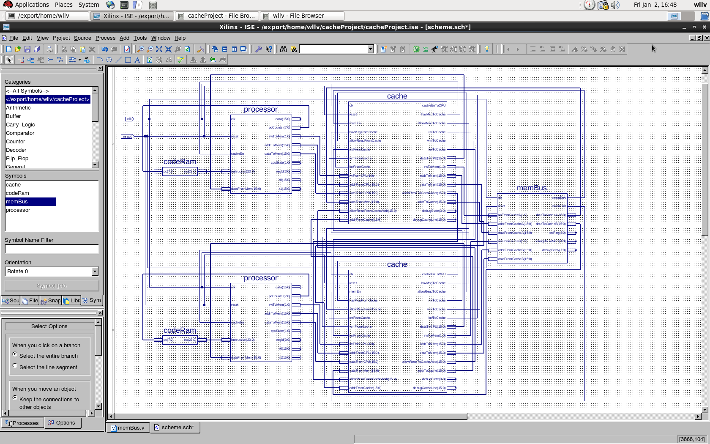
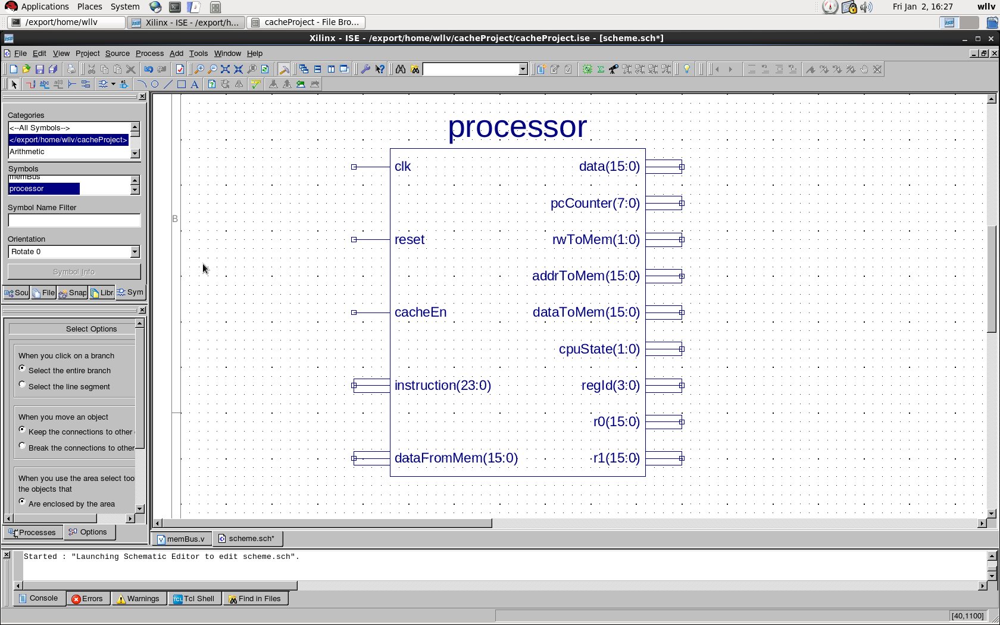
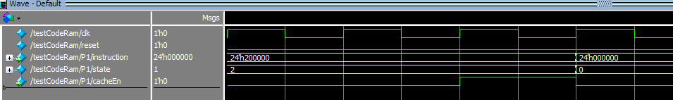
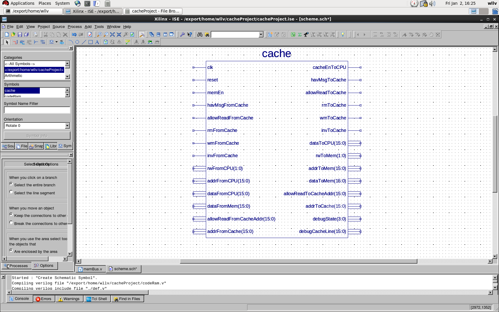
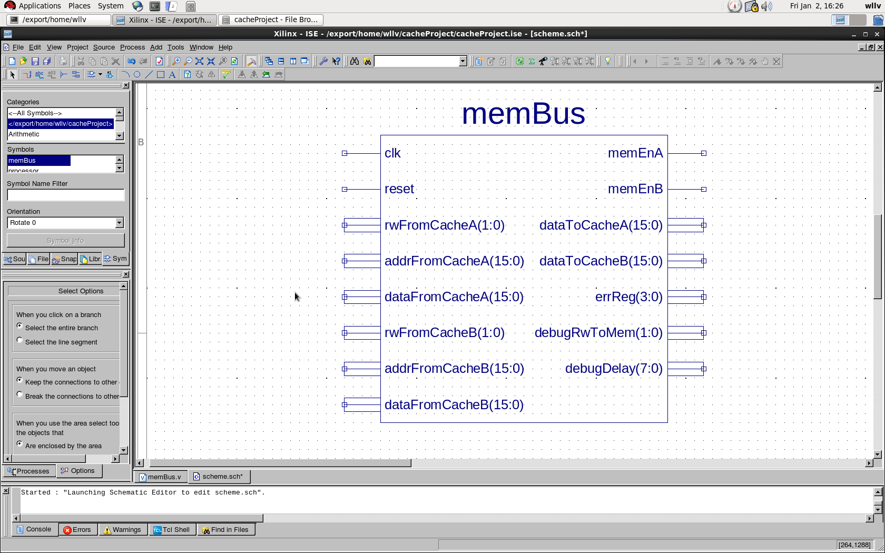
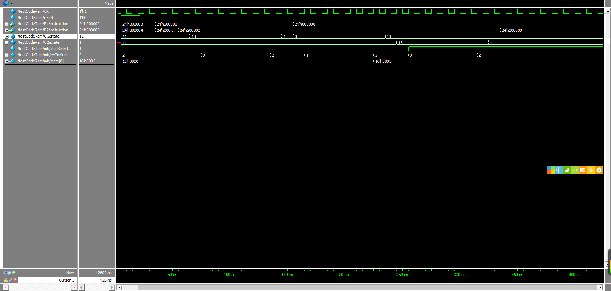
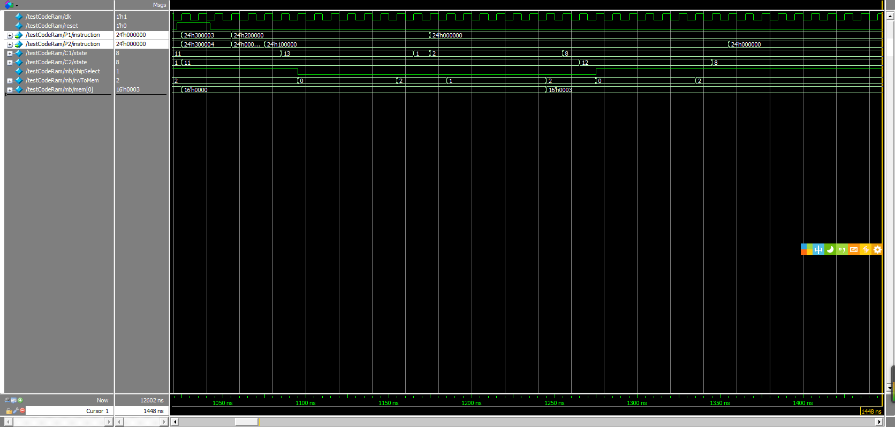
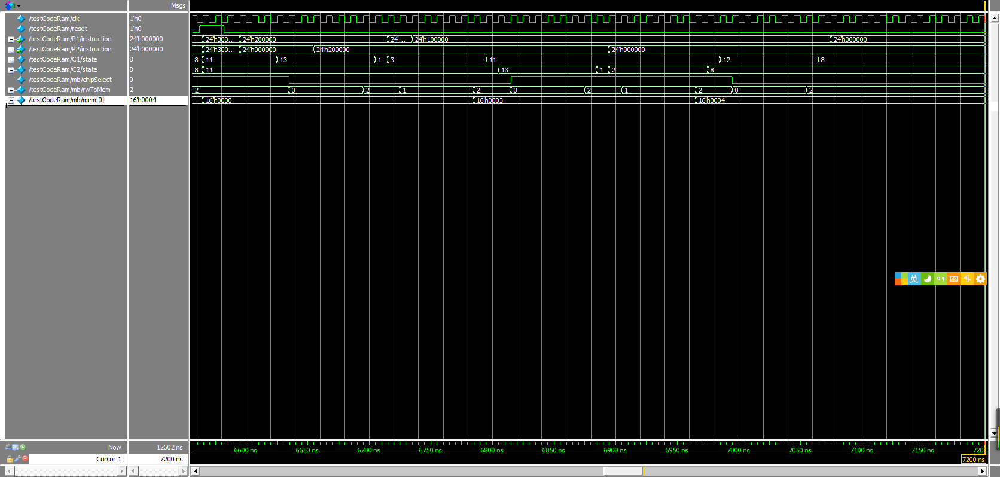
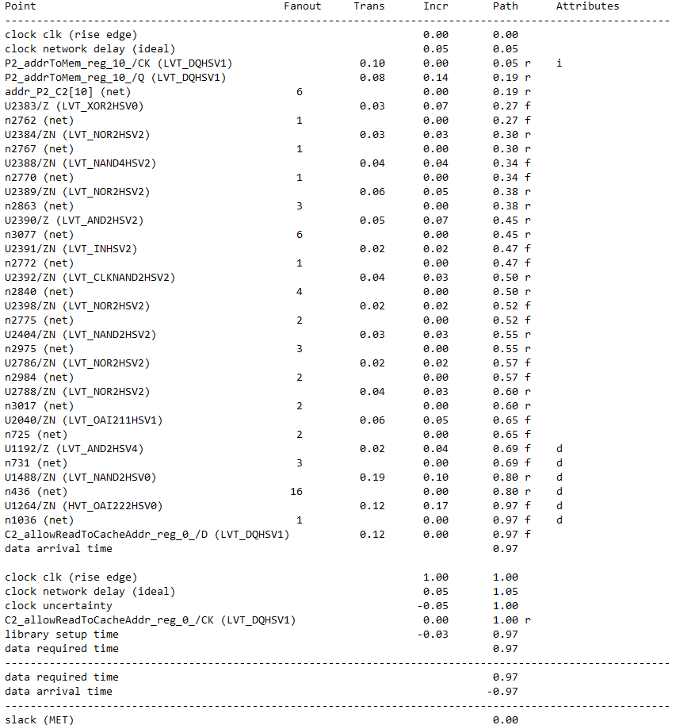

实现了一个基于MSI总线监听协议的双核cache coherency模型. 包括:
完整的电路结构如下图所示:

`include "./def.v"
module codeRam(
input[`PCWIDTH-1:0] pc,
output reg[`INSWIDTH-1:0] ins
);
parameter CODESIZE = 8; //a progra could have at most 8 instructions
reg[`INSWIDTH-1:0] codes[0:CODESIZE-1];
reg[3:0] codeSize;
always @(pc) begin
if(pc >= codeSize) begin
ins = 0; //return nop
end
else begin
ins = codes[pc];
end
end
endmodulecode memory全部代码如上. 在code ram中, 输出为以指针计数器的值为地址的memory的值, 认为没有访存延迟. 当指令计数器的值超过程序指令数时, 输出nop指令, 其实可以认为code ram是一块不会发生read miss的code cache, 因为指令集中没有jmp指令, 所以PC只会顺序增加.
这块memory只是用来存储指令, 用作测试. 因此并没有设计可综合的加载指令的功能, 需要在testbench代码中通过initial语句将指令载入code memory中, 并设置好code size, 相当于人肉编译器. 加载指令的形式如下面的代码:
initial begin
clk = 1'b0;
reset = 1'b0;
code1.codeSize = 3;
code2.codeSize = 3;
code1.codes[0] = {`SET, `R0, `WORDWIDTH'd3}; //p1.r0 = 3
code1.codes[1] = {`ST, `R0, `ADDRWIDTH'd0}; //mem[0] = p1.r0, write miss
code1.codes[2] = {`NOP, `R0, `WORDWIDTH'd0}; //nop;
code2.codes[0] = {`SET, `R0, `WORDWIDTH'd4}; //p1.r0 = 3
code2.codes[1] = {`NOP, `R0, `WORDWIDTH'd0}; //nop
code2.codes[2] = {`ST, `R0, `ADDRWIDTH'd0}; //mem[0] = p1.r0, write miss
// rest of test bench code
endProcessor具有五条指令, 能够完成内存读写, 寄存器读写功能, 对Processor来说, cache是透明的,指令分为fetch and decode, exe, mem三个阶段, 没有流水线, 当访存时, CPU要stall. Processor的Schematic框图如下:

Processor的输入输出端口分别为:
为CPU设计了5条简单的指令, 指令为24位, 其中4位表示指令类型, 4位为寄存器ID, 16位为内存地址或者立即数, 指令格式均为OP REGID ADR_DATA. 其实五条指令用3bit就可以表示, 之所以用四个bit, 只是为了在使指令代码在16进制的波形图中更可读. 五条指令类型分别如下:
`define NOP 4'd0 //nop, do nothing
`define LD 4'd1 //ld registerIdx addr: load data from memory to register
`define ST 4'd2 //st registeridx addr: store value of one register to memory(cache)
`define SET 4'd3 //set registeridx data: set value of one register as data in the instruction
`define GET 4'd4 //read the value of one register一条指令的执行流程分为fetch and decode, exe, mem三个过程, 另外增加了一个error state, 用来进行出错检测, 当cpu进入error state后, 就再也无法转到其他状态, 除非摁下reset键.
每个时钟上升沿, 如果reset无效并且状态不是error, 则检查当前的state.
如果当前状态为fetch, 则说明取指与译码已经完成, 转入exe阶段. 代码如下:
else if(state == `FETCH) begin
//counter,state,data,rwtomem,addrtomem,datatomem
state = `EXE;
rwToMem = `IDEL;
end如果当前状态为exe, 则对于nop指令, 设置下一个状态为fetch, 对于set和get指令, 分别完成对寄存器的修改或者读取, 然后转入fetch状态, 即nop,set,get三条指令, 执行只需要两个cycle.对于ld和st指令, 则设置相应的地址/数据输出, 转入mem阶段.
如果当前状态为mem, 则指令只可能是ld或者st, 如果不是, 说明有硬件错误, 转入error state
当转入mem状态时, 或者cache目前正在执行其他访存动作(如响应其他cache总线广播的写回动作) 由cache输入的cacheEn会被置零, 当cache完成访存(hit或者miss并且完成访存)后, cacheEn会有一个正脉冲, 如果cacheEn为0, 则等待, 如果检测到cacheEn为1, 则fetch下一条指令. 如下图所示:

为简单起见, cache只设置了一个cacheLine, 同时每个block中只有一个word, 则比较hit/miss就是只要查看cacheline的addr进行比较即可. 当有多条cacheLine, 每个block中有多个word时, 需要对CPU穿来的address进行解码, 确定使用那条cacheLine以及数据在block中的offset.
cache的schematic框图如下:

cache是本设计的重点与难点, 基本状态转换关系为课程课件上的MSI状态转换图. 因为电路设计的经验不多, 在设计时, 遇到的困难主要有以下三点:
本设计对以上三个问题的解决方案为:
M_WM_WB和 M_WM_RD两个状态, 于是原本modified to modified的状态转换关系现在变为 modified->m_wm_wb->M_WM_RD->modified. 这些中间状态的前一个状态和目标状态都是唯一的. 此外, 像processor一样, 设置了一个error状态. 只可能从其他状态转入error状态, 不可能从error状态转入其他状态. 除非摁下reset键.输入输出端口列表如下:
input clk, //时钟信号
input reset,//复位信号
input[`IOSTATEWIDTH-1:0] rwFromCPU, //表示CPU访存动作, 允许状态有read/write/idel
input[`ADDRWIDTH-1:0] addrFromCPU, //由CPU传入的访存地址
input[`WORDWIDTH-1:0] dataFromCPU, //由CPU传入的数据
input[`WORDWIDTH-1:0] dataFromMem, //从memory取回的数据
input memEn, //memory bus向cache发送的表示访存完成的信号
input havMsgFromCache, //表示收到其他cache的广播
input rmFromCache, //收到广播的read miss信号
input wmFromCache, //收到广播的write miss信号
input invFromCache, //收到广播的invalidate信号
input allowReadFromCache, //表示这个cache不必等待其他cache的访存完成
input[`ADDRWIDTH-1:0] allowReadFromCacheAddr, //需要等待其他cache访存完成的地址
input[`ADDRWIDTH-1:0] addrFromCache, //其他cache广播信号的内存地址
output reg cacheEnToCPU, //告诉CPU写入完成或者可以放心读取数据
output reg[`WORDWIDTH-1:0] dataToCPU, //响应CPU read发送的数据
output reg[`IOSTATEWIDTH-1:0] rwToMem, //cache访存的动作, 可以为write/read/idel
output reg[`ADDRWIDTH-1:0] addrToMem, //传入memory的地址
output reg[`WORDWIDTH-1:0] dataToMem, //要写入memory的数据
output reg havMsgToCache, //表示有需要广播的信号
output reg allowReadToCache, //表示其他cache是否需要等待本cache完成访存才能读取特定地址数据
output reg[`ADDRWIDTH-1:0] allowReadToCacheAddr, //本cache正在访存因而其他cache不能读取的内存地址
output reg[`ADDRWIDTH-1:0] addrToCache, //bus广播中的内存地址
output reg rmToCache, //广播read miss信号
output reg wmToCache, //广播write miss信号
output reg invToCache, //广播invalidate信号为一条cacheline定义了以下几种状态
`define ERROR 4'h0 //表示cacheline遇到了硬件错误.
`define MODIFIED 4'h1 //表示cacheline为MODIFIED.
`define M_SRM_WB 4'h2 //表示cacheline为MODIFIED, 并且监听到了总线上的readmiss 信号, 正在执行写回操作.
`define M_SWM_WB 4'h3 //表示cacheline为MODIFIED, 并且监听到了总线上的writemiss信号, 正在执行写回操作.
`define M_WM_WB 4'h4 //表示cacheline为MODIFIED, 并且遇到了CPU writemiss, 正在执行写回操作.
`define M_RM_WB 4'h5 //表示cacheline为MODIFIED, 并且遇到了CPU readmiss, 正在执行写回操作.
`define M_WM_RD 4'h6 //表示cacheline为MODIFIED, 并且遇到了CPU writemiss, 已经执行完写回操作, 正在执行读取操作.
`define M_RM_RD 4'h7 //表示cacheline为MODIFIED, 并且遇到了CPU readmiss, 已经执行完写回操作, 正在执行读取操作.
`define SHARED 4'h8 //表示cacheline为SHARED.
`define S_RM_RD 4'h9 //表示cacheline为SHARED, 并且遇到了CPU readmiss, 正在执行读内存操作.
`define S_WM_RD 4'ha //表示cacheline为SHARED, 并且遇到了CPU writemiss, 正在执行读内存操作.
`define INVALID 4'hb //表示cacheline为INVALID.
`define I_RM_RD 4'hc //表示cacheline为INVALID, 并且遇到了read miss,正在执行读内存操作.
`define I_WM_RD 4'hd //表示cacheline为INVALID, 并且遇到了writemiss, 正在执行读内存操作.在时钟上升沿, 检测cacheLine的状态,或者复位信号, 并执行相应的动作.
对于 MODIFIED状态: 如果检测到总线上的readmiss或者writemiss信号, 则执行写回操作, 并将状态置为 M_SRM_WB 或 M_SWM_WB. 否则, 检查CPU动作, 如果readhit/writehit, 则状态仍为 MODIFIED. 如果发现readmiss/writemiss, 则执行写回操作, 发送总线广播信号, 并将状态置为 M_RM_WB 或 M_WM_WB . 表示正在执行写回操作, 写回完成之后需要进行读取.
对于 M_SRM_WB 状态, 本状态说明cache正在进行响应readmiss的写回操作, 此时检测memEn信号判断写回是否已经完成, 如果没有完成, 则等待. 如果写回已经完成, 则状态转为 SHARED. 这里需要注意, 因为本cache完成写回操作是因为监听到了其他cache的miss信息, 即本cache完成写回后, 另一cache要立刻读取写回的内存的, 因此, 此时如果本cache上也有CPU上的miss信息,即在本cache访存期间, CPU又执行了需要访存的指令, cache的处理需要stall一个cycle. 对于 M_SWM_WB 状态, 处理方式与 M_SRM_WB 大致相同, 只不过最后的状态不是转向 SHARED, 而是转向 INVALID.
对于 M_WM_WB 状态, 说说明该cacheline正在执行写回操作, 则首先要查询memEn判断写回是否已经完成, 如果没有完成, 则继续等待. 如果已经完成写回, 则准备进行读取. 但是在读取之前, 需要确保拥有这条数据的其他cache如果状态为Modified, 已经响应总线信号将数据写回. 则查询allowreadfromcache信号, 如果查询成功, 则开始读取, 进入 M_WM_RD 状态. 否则, 继续等待. 对于 M_RM_WB 状态, 动作与 M_WM_WB 相似, 不过下一状态为 M_RM_RD.
对于 M_WM_RD 状态, 说明此时cacheline已经向memory发送了读取请求. 则此时需要不断查询memEn判断访存是否已经成功. 如果已经成功, 则将状态修改为 MODIFIED, 读取cacheline, 并修改相关数据., 说明一次CPU访存已经成功. 否则, 继续等待. 对于 M_RM_RD 状态, 动作与 M_WM_RD 类似, 不过最终状态为 SHARED.
对于 SHARED 状态, 当检测到总线readmiss信号时, 不必响应, 状态依然为SHARED, 如果检测到总线writemiss或者invalidate信号, 将相应地址的cacheline状态置为 INVALID. 如果readhit,则向CPU输出相关cacheline的数据, 如果writehit, 则修改相关cacheline的值, 并将相关cacheline的状态置为 MODIFIED. 如果检测到CPU的readmiss或者writemiss, 此时需要读内存, 先征得其他cache的同意, 然后将状态置为 S_RM_RD 或者S_WM_RD. 并向memory发送访存请求.
对于 S_RM_RD 或者 S_WM_RD状态, 需要查询memEn判断是否访存完毕, 如果完毕, 则将状态置为SHARED或者MODIFIED.
对于 INVALID状态, 不必响应总线请求, 所有的CPU请求均为miss. 对于readmiss,总线广播, 如果其他cache允许对该地址进行读取, 则将状态置为 I_RM_RD. 对于writemiss, 动作相同, 不过状态要置为 I_WM_RD;
对于 I_WM_RD或者I_RM_RD, 则需要不断查询memEn判断访存是否成功, 如果成功, 读取内存数据, 进行修改(对于writemiss), 并将状态置为 MODIFIED或者 SHARED.
memory bus模块的schematic框图如下:

使用reg变量模拟memory的行为, 通过一套优先级系统分派当两个cache同时进行访存时的内存占有权. 通过内部的延迟计数器模拟访存延迟. 每次访存完成后, 延迟计数器置位, 并每个clock cycle减一. 当延迟计数器为零时, 对Memory进行读写操作.
memBus模块的输入输出端口列表及其相关含义如下:
input clk,
input reset,
//interact with cache A
input wire[`IOSTATEWIDTH-1:0] rwFromCacheA,
input wire[`ADDRWIDTH-1:0] addrFromCacheA,
input wire[`WORDWIDTH-1:0] dataFromCacheA,
output reg[`ADDRWIDTH-1:0] dataToCacheA,
output reg memEnA,
//interact with cache B
input wire[`IOSTATEWIDTH-1:0] rwFromCacheB,
input wire[`ADDRWIDTH-1:0] addrFromCacheB,
input wire[`WORDWIDTH-1:0] dataFromCacheB,
output reg[`ADDRWIDTH-1:0] dataToCacheB,
output reg memEnB,
output reg[`ERRWIDTH-1:0] errReg,
//debug output
output[`IOSTATEWIDTH-1:0] debugRwToMem,
output[7:0] debugDelay通过内部寄存器chipSelect表示当前占据内存的cache, 0 表示cacheA, 1表示cacheB. 为了防止某个cache一直占据内存, 设置了一个prefer寄存器, 当cacheA释放对内存的占有后, 将prefer置为CB, 则下一个cycle, 若A和B同时发来访存请求, 优先查询B的访存请求. prefer只对同时发来的访存请求有效, 如果A先发来请求而B后发, 即使prefer为B, 仍然会先响应A的请求.
在memBus内部, 有内部寄存器rwToMem/addrToMem/dataToMem, 表示占据内存的cache的读写请求, 当rwToMem为idel时, 表示当前没有cache占据内存. 每个时钟上升沿, 查询rwToMem状态, 如果为idel,则对两个cache, 按照prefer建议的查询顺序进行查询, 当查询到某个cache有访存请求时, 开始执行该cache的访存请求. 此时延迟计数器开始减一计数.
当延迟计数器为0时, 完成访存, 将memEn置一, 并将延迟计数器重新置位.
通过initial语句向codeRam中加载语句自动完成测试, 测试后检查processor的寄存器, cacheline中的值与状态, memory中相应地址的值, 相关信号的波形图来验证硬件设计的正确性
对于信号波形图, 如果在图片太小看不清, 可以选择打开html格式文档, 在新标签页中查看图片.
processor1先对memory进行写操作, 而后processor2再进行写操作, 则应当有cache1进行写回并且invalidate自身,而cache2状态为modified.
测试代码如下:
clk = 1'b0;
reset = 1'b0;
code1.codeSize = 3;
code2.codeSize = 3;
code1.codes[0] = {`SET, `R0, `WORDWIDTH'd3}; //p1.r0 = 3
code1.codes[1] = {`ST, `R0, `ADDRWIDTH'd0}; //mem[0] = p1.r0, write miss
code1.codes[2] = {`NOP, `R0, `WORDWIDTH'd0};
code2.codes[0] = {`SET, `R0, `WORDWIDTH'd4}; //p1.r0 = 3
code2.codes[1] = {`NOP, `R0, `WORDWIDTH'd0};
code2.codes[2] = {`ST, `R0, `ADDRWIDTH'd0}; //mem[0] = p1.r0, write miss
#5 reset = 1'b1;
#17 reset = 1'b0;
#1000;
$display("Write After Write");
$display("time:%d,P1.r0:%d,C1.cachLine:%d,C1.state:%h", $time,P1.regFile[0],C1.cacheLine, C1.state);
$display("time:%d,P2.r0:%d,C2.cachLine:%d,C2.state:%h", $time,P2.regFile[0],C2.cacheLine, C2.state);
$display("mem[0]:%d", mb.mem[0]);
$display("___________________________________________________");在这段代码中, Processor1中加载的指令为:
set r0 3; // r0 = 3
store mem[0] r0;
nop;Processor2中加载的指令为:
set r0 4;
nop;
store mem[0] r0;测试结果如下:
Write After Write
P1.r0: 3, C1.cachLine: 3,C1.state:b
P2.r0: 4, C2.cachLine: 4,C2.state:1
mem[0]: 3
可以看到, 仿真完成后, cache1的值为3, 状态为 INVALID, 而内存中的值也为3, 这是cache1写回的结果, 而cache2的状态为 MODIFIED, 值为4, cache2并没有写回, 所以cache2中的值是最新的.
测试波形图如下:

可以看到, Processor1首先执行 store操作, 而processor2发生write miss后就等待processor1完成. cache1的状态经历了 INVALID->I_WM_RD->MODIFIED->M_SWM_WB->INVALID, 表明它先是由invalid经历write misss转到modified, 而后snoop到总线上的writemiss信息, 执行写回动作, 写回完成后状态变为 INVALID, 而cache2在 INVALID状态发生writemiss后就一直等待cache1的写回完成信息, 当写回完成后, 状态变为 I_WM_RD进行读内存, 读入后状态变为 MODIFIED.
测试代码如下:
code1.codeSize = 3;
code2.codeSize = 3;
code1.codes[0] = {`SET, `R0, `WORDWIDTH'd3}; //p1.r0 = 3
code1.codes[1] = {`ST, `R0, `ADDRWIDTH'd0}; //mem[0] = p1.r0, write miss
code1.codes[2] = {`NOP, `R0, `WORDWIDTH'd0};
code2.codes[0] = {`SET, `R0, `WORDWIDTH'd4}; //p1.r0 = 3
code2.codes[1] = {`NOP, `R0, `WORDWIDTH'd0};
code2.codes[2] = {`LD, `R0, `ADDRWIDTH'd0}; //mem[0] = p1.r0, write miss
reset = 1'b1;
#20 reset = 1'b0;
#1000;
$display("Read After Write");
$display("time:%d,P1.r0:%d,C1.cachLine:%d,C1.state:%h",$time,P1.regFile[0],C1.cacheLine, C1.state);
$display("time:%d,P2.r0:%d,C2.cachLine:%d,C2.state:%h",$time,P2.regFile[0],C2.cacheLine, C2.state);
$display("mem[0]:%d", mb.mem[0]);
$display("___________________________________________________");在这段代码中, Processor1加载的指令为:
set r0 3
store mem[0] r0
nop在这段代码中, Processor2加载的指令为:
set r0 4
nop
load r0 mem[0]测试结果如下:
Read After Write
time: 2042,P1.r0: 3,C1.cachLine: 3,C1.state:8
time: 2042,P2.r0: 3,C2.cachLine: 3,C2.state:8
mem[0]: 3
由结果可知, processor2的load指令执行完成后, memory,register,cachline相关数据均为3, 且cacheline状态为 SHARED.
测试波形图如下:

由波形图, cache1的状态变换为: INVALID->I_WM_RD->MODIFIED->M_SRM_WB->SHARED, 即先是由INVALID状态经历write miss转到modified, 再响应总线上的writemiss信号, 进行写回操作, 状态变为SHARED.
而cache2在发生readmiss后, 就一直等待cache1的allowRead信号, 当cache1完成写回操作之后, 开始读内存, 状态变为 SHARED.
测试代码如下:
code1.codeSize = 4;
code2.codeSize = 5;
code1.codes[0] = {`SET, `R0, `WORDWIDTH'd3}; //p1.r0 = 3
code1.codes[1] = {`ST, `R0, `ADDRWIDTH'd0}; //mem[0] = p1.r0, write miss
code1.codes[2] = {`NOP, `R0, `WORDWIDTH'd0};
code1.codes[3] = {`LD, `R0, `WORDWIDTH'd0};
code2.codes[0] = {`SET, `R0, `WORDWIDTH'd4}; //p1.r0 = 3
code2.codes[1] = {`NOP, `R0, `WORDWIDTH'd0};
code2.codes[2] = {`NOP, `R0, `WORDWIDTH'd0};
code2.codes[3] = {`NOP, `R0, `WORDWIDTH'd0};
code2.codes[4] = {`ST, `R0, `ADDRWIDTH'd0};
reset = 1'b1;
#20 reset = 1'b0;
#1500;
$display("Special Read After Write");
$display("time:%d,P1.r0:%d,C1.cachLine:%d,C1.state:%h",$time,P1.regFile[0],C1.cacheLine, C1.state);
$display("time:%d,P2.r0:%d,C2.cachLine:%d,C2.state:%h",$time,P2.regFile[0],C2.cacheLine, C2.state);
$display("mem[0]:%d", mb.mem[0]);
$display("___________________________________________________");在这段测例中, Processor1加载的代码为
set r0 3
store mem[0] r0
nop
load r0 mem[0]在这段测例中, Processor2加载的代码为
set r0 4;
nop;
nop;
nop;
store mem[0] r0;注意, 这里Processor1中的load指令是第四条指令, 而processor2中的store指令是第五条指令, 但是因为访存延迟超过5个clock cycle, 因此, 实际上是Processor2的store指令先执行, 而Processor1的load指令后执行, 这里是否需要加入一个同步机制我目前还没有很成熟的想法, 因为我觉得程序的行为应该是在访存延迟为0跟访存延迟很大时一致的. 否则, 对于相同的processor, 换一个差一点的内存, 是否就需要编译器重新生成不同的代码? 编译器是否需要知道CPU的访存延迟? 在这方面, 我的相关知识还比较匮乏.
测试结果如下:
Special Read After Write
time: 8082,P1.r0: 4,C1.cachLine: 4,C1.state:8
time: 8082,P2.r0: 4,C2.cachLine: 4,C2.state:8
mem[0]: 4
可以看出这里Processor1在processor2执行完 store操作之后才进行读操作, 因而发生readmiss, 并导致cache2执行写回动作. 因而memory中的值为4, 而最后两个cache中的状态均为 SHARED.
测试波形图如下:

从波形图上可以看出, processor1的 load操作是在 Processor2的store操作之后完成的. 而processor1的状态转换为 INVALID-> I_WM_RD->MODIFIED->M_SWM_WB->INVALID->I_RM_RD->SHARED, 说明它首先经历了一个 INVALID遭遇write miss而变成 MODIFIED的状态转换, 随后立即监听到另一个cache广播的write miss信号, 而看processor2的状态转换图, 初始为INVALID状态, 遭遇writemiss后等待cache1写回, 等待写回完成后,读取内存并修改, 状态称为MODIFIED, 随后立即检测到cache1广播的readmiss状态, 将数据写回, 并状态变为SHARED.
详细的综合结果及report在dc_report文件夹中, 下面为找出的critical path, 在时钟周期为1GHz时可以满足时钟约束.

目前为了容易理解, 设置了许多中间状态, 有许多状态的行为其实没有什么区别, 只是执行动作后跳转到的下一状态不同而已, 这些状态应该可以合并为同一状态, 理由相关的条件判断确定下一个状态即可.